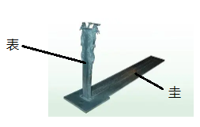
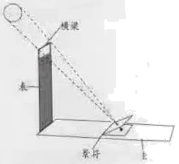

2021年北京市中考物理试题 · 科普阅读 第24题
24. 请阅读《华夏之光——主表》
华夏之光——圭表
我国古代的天文观测一直居于世界领先地位，天文学家们发明了许多先进的天文观测仪器，其中圭表就是典型的代表。圭表（如图所示）包括圭和表两部分，正南北方向平放的尺，叫作圭，直立在平地上的标竿或石柱，叫作表，圭和表相互垂直。战国以前的天史学家已能够利用水面来校正圭，使其水平，使用铅垂线来校正表，使其与圭相互垂直。

依据圭表正午时表影长度的变化，就能推算出二十四节气，依据表影长短的周期性变化，就能确定一回归年的天数。为了解决上述问题，元代天文学家郭守敬采取理论与实践相结合的科学方法，对圭表进行了一系列改进与创新。他将表的高度增加，并且在表顶加一根架空的横果，使表高变为传统表高的五倍。这样，测量时，把传统的确定表影端的位置变为确定梁影中心的位置，提高了测量影长的精度。郭守敬又利用小孔成像的原理，发明了景符，利用景符可以在圭面上形成太阳和横梁的清晰像（如图所示），这样就可以精确的测量表的影长了。这些措施成功解决了圭表发明以来，测影时“虚景之中考求真实”的困难。以圭表为代表的我国古代的料技成果，像一颗颗璀璨的明珠，闪耀着智慧的光芒，激励着我们攀登新的科技高峰。

请根据上述材料，回答下列问题∶
（1）请写出我国古代天文学家保证圭和表相互垂直的措施，并解释为什么这种措施可以保证圭和表是相互垂的。
（2）郭守敬的改进与创新措施解决了早期圭表的什么问题？
（3）除了圭表，请你再列举一个我国古代天文观测仪器。